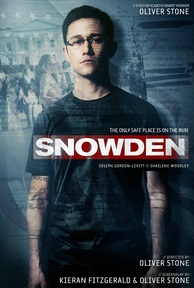
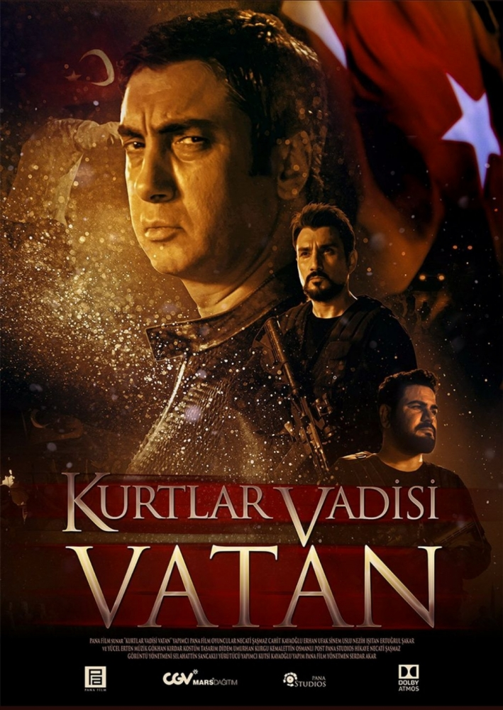

|  | The NSA's illegal surveillance techniques are leaked to the public by one of the agency's employees, Edward Snowden, in the form of thousands of classified documents distributed to the press. Director: Oliver Stone Writers: Kieran Fitzgerald, Oliver Stone Stars: Joseph Gordon-Levitt, Shailene Woodley, Melissa Leo . |
|  | Polat Alemdar Erhan and Cahit are yet again on the front lines only to discover a military coup attempt in Turkey. Director: Serdar Akar Writers: Alper Erze, Cahit Kayaoglu. Stars: Necati Sasmaz, Erhan Ufak, Ertugrul Sakar |
| Hobbs has Dominic and Brian reassemble their crew to take down a team of mercenaries: Dominic unexpectedly gets convoluted also facing his presumed deceased girlfriend, Letty. Director: Justin Lin Writers: Chris Morgan, Gary Scott Thompson Stars: Vin Diesel, Paul Walker, Dwayne Johnson. |